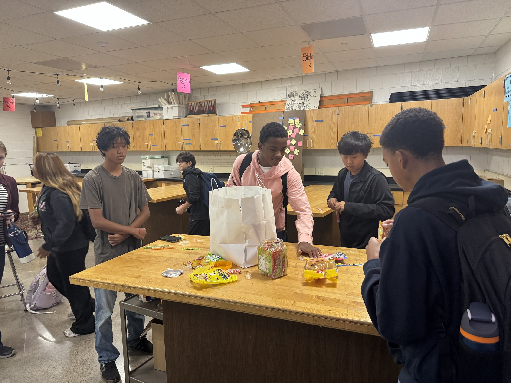
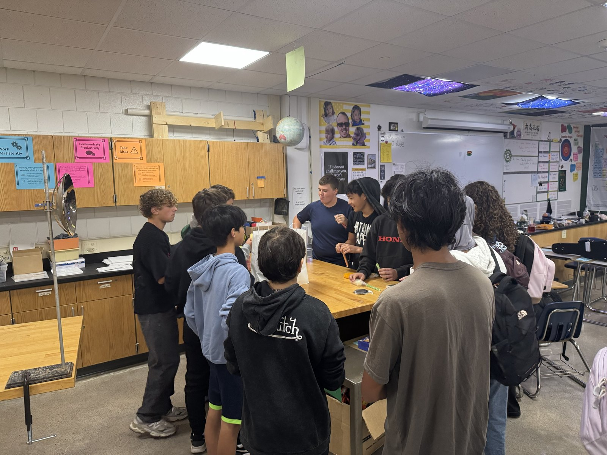
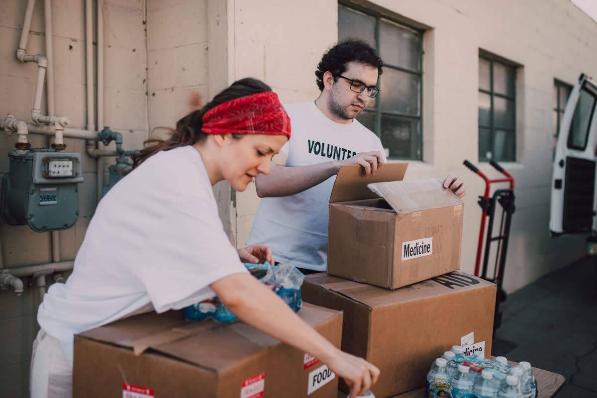
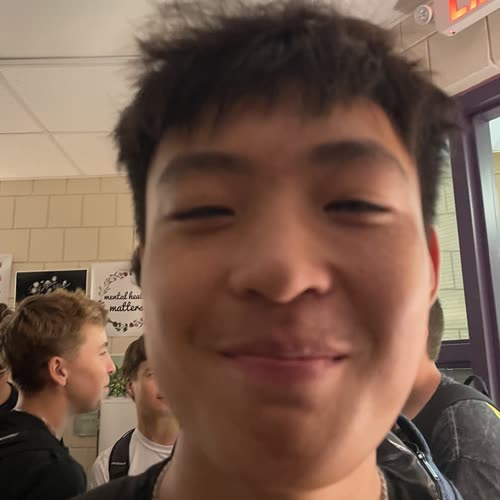
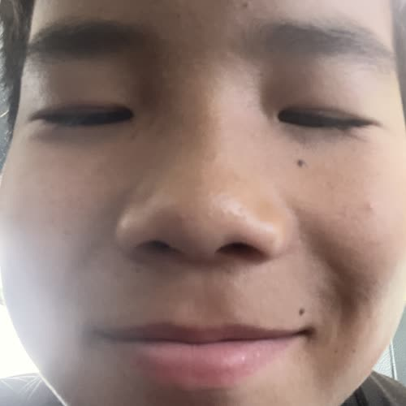

Show up, make friends
Come to meetings, hang out, eat good food, celebrate where we're all from. Allies are totally welcome. You don't have to be Asian to be part of this.
See how to join →
Mayo High School · Student-Founded, Student-Run
We're a community for Asian American, Pacific Islander, and Desi students at Mayo, and honestly, anyone else who wants in too. Real friends, good food, real culture, and a chance to actually help people who need it.
A lot of us are looking for a real sense of belonging and a way to connect over where we come from, especially since our school doesn't even offer Asian language or cultural classes. We've already got some great culture clubs here, but an ASA fills in what they don't: a space for Asian students and allies to celebrate who we are, and a way to actually do something about real problems too, like raising money for disaster relief overseas.
Wilson Wang, Founder

Mayo ASA is basically a space to hang out, make friends outside your own grade, and celebrate where you're from. Food, traditions, celebrations, all of it. It's not really something you find just walking around the club fair.
And when we've got the energy for it, we try to turn that into something bigger. Like actually raising money for people who need it.
Two things, mainly. And we're upfront about both.
Come to meetings, hang out, eat good food, celebrate where we're all from. Allies are totally welcome. You don't have to be Asian to be part of this.
See how to join →Right now that means raising money for Nepal flood relief. Bake sales, benefit nights, whatever works. Every dollar actually goes somewhere.
See our Global Impact plans →
We're raising money for Nepal flood relief. Real support for people recovering from the flash floods that hit Nepal in August 2026. Just because we're a culture club doesn't mean we can't actually help people too.
Mayo ASA was started by four Mayo students who wanted something real on campus.


Co-founded Mayo ASA and is the best soccer player at Mayo High School — despite being B-squad. He loves chess, and he's the person to ask if you have questions.
Come join us. You don't have to be Asian, you just have to be curious.